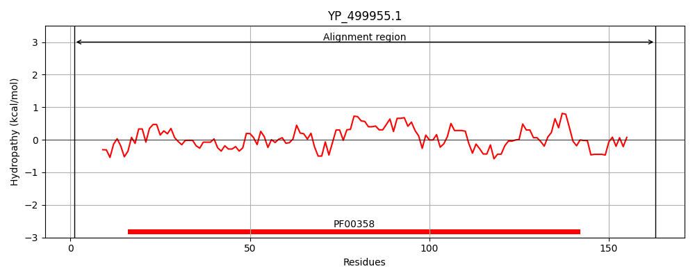
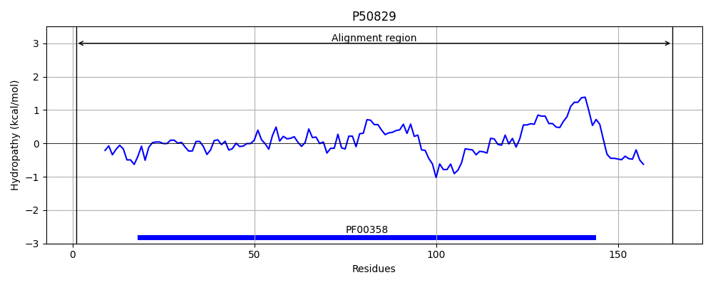
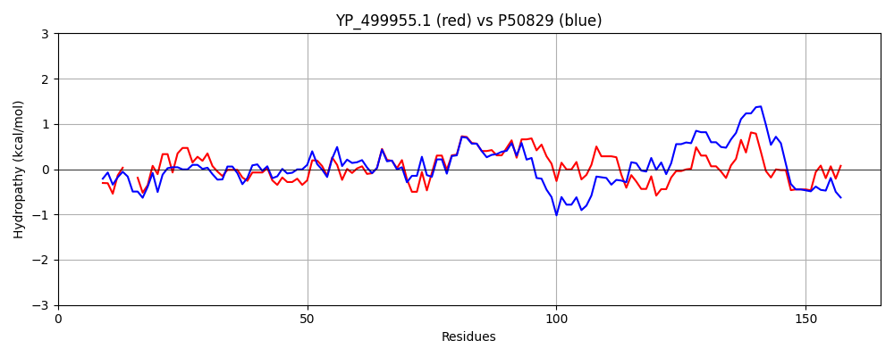

Hit Accession: P50829
Hit TCID: 4.A.1.1.21
Hit Description: gnl|BL_ORD_ID|10800 gnl|TC-DB|P50829|4.A.1.1.21 Putative phosphotransferase enzyme IIA component YpqE OS=Bacillus subtilis (strain 168) OX=224308 GN=ypqE PE=3 SV=1
Mach Len: 165
e:0.000000
Query TMS Count : 0
Hit TMS Count: 0
TMS-Overlap Score: 0.000000
Predicted Substrates:None
BLAST Alignment:
Score: 412 , Bit scores: 163 bits, E-value: 4.5e-52, Alignment length: 165, Percentage identity: 47
Query: 1 MFKKLFGKGKEVQK--DIAIYAPLTGEFVKIEDIPDPVFAQKMMGEGFGINPTEGEVVSPIAGRVDNVFPTKHAIGLKADNGLELLVHIGLDTVQLDGEGFEVLVSSGDEVNVGDPLVRFNLEYINNNAKSVISPIIITNTDQAASINIYDENAVIKGETKVIDV 163
M KKLFG GK +K + IY+P G + + D+PDPVF+QKMMGEG + P+ GE+VSP G V +F TKHA+G++ +G+ELL+H+GL+TV ++GEGF + GD+V VGDPL+ +LE I A S + PI+I N + S+ E A KGE+K+ +
Sbjct: 1 MLKKLFGMGKIQEKVTEEVIYSPADGTVMDLSDVPDPVFSQKMMGEGIAVEPSSGEIVSPAEGEVIQIFHTKHAVGIRTRSGIELLIHVGLETVNMNGEGFTAHIKEGDKVKVGDPLITCDLELIKEKASSTVIPIVIMNGEAVGSMVSAGEKAARKGESKLFTI 165 | Protein Hydropathy Plots: |
|---|
|  |  |
Pairwise Alignment-Hydropathy Plot:
|
|---|
|  |